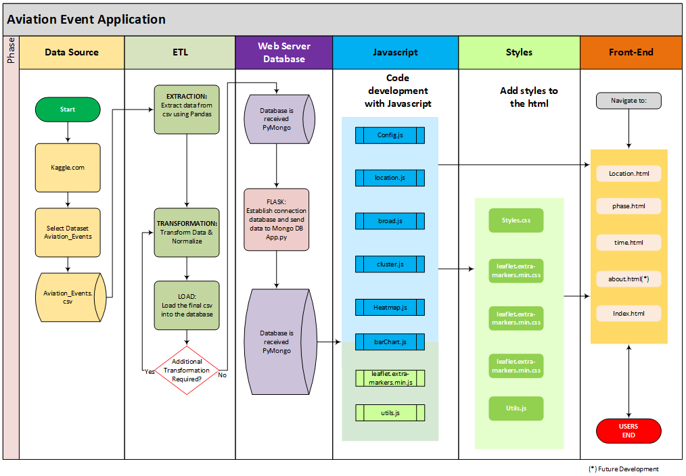

Architecture Diagram
The data flow diagram (DFD) ilustrate how the data is processed by a system in terms of inputs and output.
DFD also shows the way the information flows through a process or system. It includes data inputs and outputs,
data stores, and the various subprocesses the data moves through.
DFDs are built using symbols and notation to describe various entities and their relationships.
DFD below shows five(5) phases: Data Source, ETL, Web Server Database, Javascript, Styles, Front-End.
Each of these phase execute some actions.

Phase - Data Source
The data flow diagram (DFD) ilustrate how the data is processed by a system in terms of inputs and output. DFD also shows the way the information flows through a process or system. It includes data inputs and outputs, data stores, and the various subprocesses the data moves through.
Phase - ETL
Carry out the extraction, normalization and loading of the data to the database.
Phase - Web Server Database
Comprise the reception of the data coming from jypiter notebook and then establish the connection using flask to transfer the data to Mongo Database (MongoDB)
Phase - Javascript
This phase cover javascript code used to transfor the input dataset and execute some commands to transform the data in graphic visualization.
- Config.js: contains api key.
- location.js: include the code to generate map location and multiple-lines graphs
- broad.js: hold the code to build waterfall graph
- cluster.js: contain the code to build a cluster map in leaflet
- heatmap.js: enclose the code to generate global heat map
- barChart.js: consist of the code to built horizontal bar chart using chart.js library from javascript.
Phase - Styles
Comprehend the slyles used on the beautification of the html and final front-end.
Phase - Front-End
Show to the user the application and data visualizations
The data flow diagram (DFD) ilustrate how the data is processed by a system in terms of inputs and output. DFD also shows the way the information flows through a process or system. It includes data inputs and outputs, data stores, and the various subprocesses the data moves through.
Carry out the extraction, normalization and loading of the data to the database.
Comprise the reception of the data coming from jypiter notebook and then establish the connection using flask to transfer the data to Mongo Database (MongoDB)
This phase cover javascript code used to transfor the input dataset and execute some commands to transform the data in graphic visualization.
- Config.js: contains api key.
- location.js: include the code to generate map location and multiple-lines graphs
- broad.js: hold the code to build waterfall graph
- cluster.js: contain the code to build a cluster map in leaflet
- heatmap.js: enclose the code to generate global heat map
- barChart.js: consist of the code to built horizontal bar chart using chart.js library from javascript.
Comprehend the slyles used on the beautification of the html and final front-end.
Show to the user the application and data visualizations